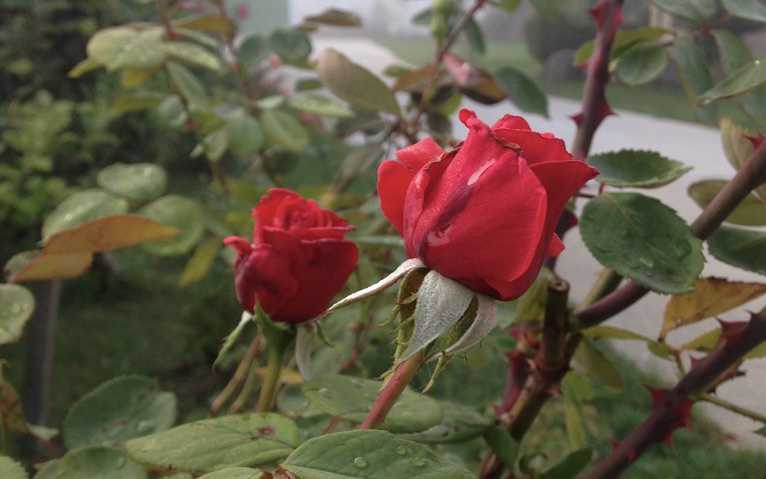

6: Sunsets and Soulmates
“Phil! I have a genius idea. You’re really going to like it.”
It’s day 12. Marieke, Stepan (a walker from The Czech Republic we met a few days ago), and I go to the top of a hill to catch the sunset. We sift through an amber field of grass and wheat and settle ourselves in a small circular clearing. The sky is cloudless, a cool breeze is present.
We talk for awhile, about what I can’t remember, but I feel wonderfully content. When the sun begins its descent into the horizon, we are overcome by the growing silence of the landscape. The birds are chirping louder and louder with every passing minute, almost as if they were calling to their friends, “Come! The miracle is happening again!” Then their voices disappear. Layer by layer, the orange and pinkish hues fade into the dark absolute of space and night while the stars took their place against the blackened sky.
“Hey Marieke, can I share something with you?”
“Yes?”
I wrap my arm around her and pull her close.
“My body heat.”
She presses her body closer to mine.
“You are so incredibly lame.”
Marieke always finds the joy in every moment. Every time we come across a blackberry bush, she stops to eat a few, halting everyone with her. Eyes closed, body perked, each bite was a delicacy. Every coffee and tortilla was always the best coffee and tortilla she ever had.
I turn and ask her what the secret is to enjoying life. She laughs.
“Oh it’s so simple, Phil.”
“Is it though?”
“It is not something you can do with the mind, it is something you feel.”
“Well that’s not helpful,” I jab. “What if I can’t feel it?”
“Don’t be silly. Just let go and listen.”
Three years ago, she had nearly committed suicide. She was a student in a rigorous doctorate program for engineering. She hated it. She felt that she didn’t belong. It just wasn’t for her, yet she desperately tried to claw her way through. To cope with the stress, she stopped eating for days at a time – it got her mind off the engineering. After months of this, her body could no longer handle the starvation.
In the hospital, she told her family that she was going to walk the Camino (this would be her first one). Everyone said she was crazy to even think of such an idea in her current state. But she ignored them and flew to Spain. A greater force was beckoning: the need to save herself.
With each passing day and every continued footstep, she grew emotionally, physically, and mentally stronger. Lightness, joy, and gratitude began to inhabit her soul. Food tasted good again, indescribably good, so much so that she would often be brought to tears while eating.
It was then that I understood why every tortilla, coffee, and blackberry was the best thing in the world to her: when faced with death, life and its constitutes become an indispensable gift. The best days were the ones in which she was alive and well enough to savor it. I wondered if it takes such a close encounter to death to acknowledge the beauty of what is right before us. I certainly could’ve used the shift in perspective.
When she reached Santiago, she fell to her knees and cried. She had proven her family wrong. She had made it. And she had found a reason to live.
After telling us her story, I pull out my phone, open up my notes, and read her “The Journey” by Mary Oliver:
- One day you finally knew
- what you had to do, and began,
- though the voices around you
- kept shouting
- their bad advice–
- though the whole house
- began to tremble
- and you felt the old tug
- at your ankles.
- “Mend my life!”
- each voice cried.
- But you didn’t stop.
- You knew what you had to do,
- though the wind pried
- with its stiff fingers
- at the very foundations,
- though their melancholy
- was terrible.
- It was already late
- enough, and a wild night,
- and the road full of fallen
- branches and stones.
- But little by little,
- as you left their voices behind,
- the stars began to burn
- through the sheets of clouds,
- and there was a new voice
- which you slowly
- recognized as your own,
- that kept you company
- as you strode deeper and deeper
- into the world,
- determined to do
- the only thing you could do–
- determined to save
- the only life you could save.
No words could express the gratitude I felt in that moment. I felt thankful that she was alive and with us in a cold field somewhere in Spain. Stepan eventually caved and accepted our invitation to share body heat under the cool night sky.
“Why did the universe bring us all together?” I ask.
“I don’t know, but I believe that everything happens for a reason,” said Marieke.
I think to myself: “What if we’re the ones who make those reasons?” then let the thought go. In the moment it doesn’t matter whether we are living a truth or a fiction. The story is ours to write.
